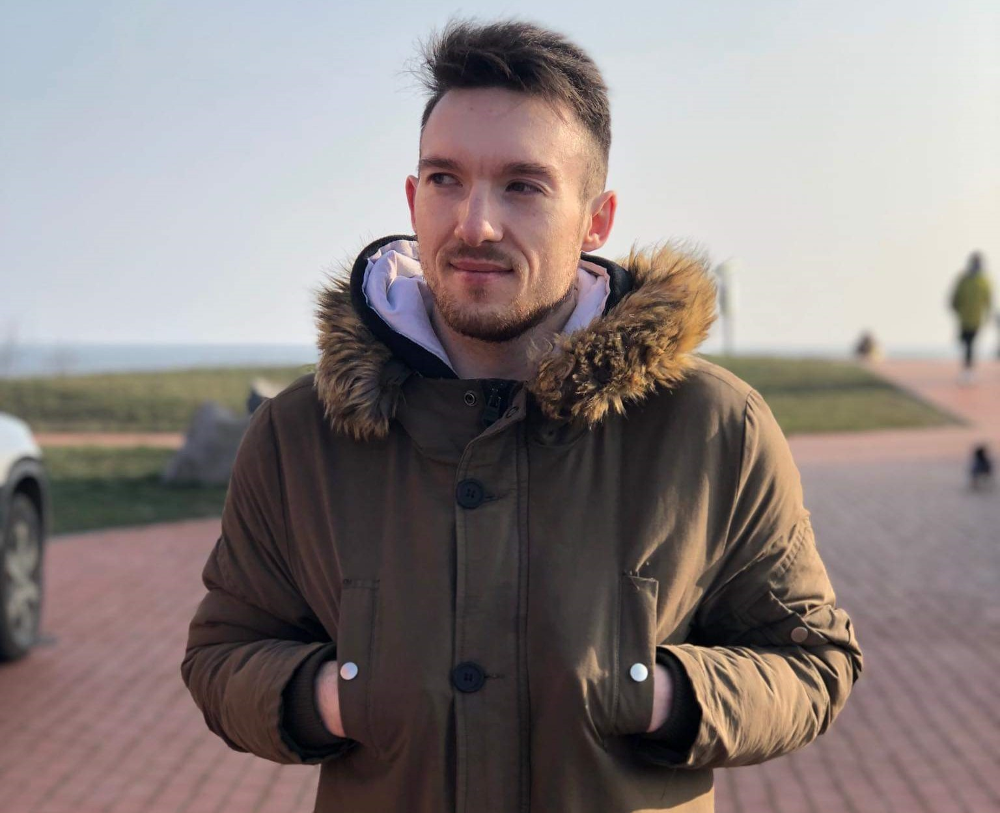

Hello, my name is Deividas Gibėža and I'm a fourth year student at LCC International University. I'm 23 years old, but already with some interesting experiences in life that I'm willing to share with you. Having worked at few, but entirely different companies allowed me to gain knowledge in different fields and get a good grasp of what to expect in the future. At the moment, the most interesting area for me is digital marketing, so expect to have a few new blog posts in the blog section in the near future.
Travelling is something special. It allows to get to know yourself better, have some fantastic experiences and also meet so many and different people. This is why I chose to participate in Work & Travel program. Visited historic places such as Boston and New York. If you want to learn more about my experience with this program, click here.
Having played football since a very young age, I could not imagine my life without it. This is why that whenever I get a chance to play, I will always do it. Representing LCC International University football team has been a blessing for me and a true honor. Learn more about the team and my story as footballer here.
I always want to try something new. This is one of the reasons why I decided to start writing blogs! I will update them weekly and it will consist most about marketing. Topics include such as social media, digital marketing, marketing communications. To keep up with the posts, click here.
